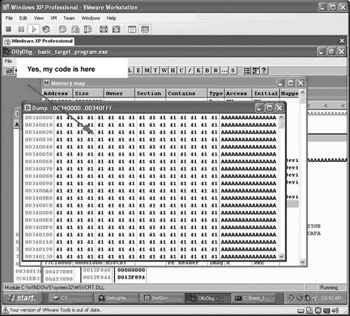

{% include JB/setup %}
{% raw %}
<div>
<a name="toppage" class="pcalibre calibre1"></a><table width="100%" border="0" cellspacing="0" cellpadding="0" class="sfbody"><tr valign="top" class="calibre2"><td class="calibre3"><a name="MainContent" class="pcalibre calibre1"></a><table width="95%" class="sfbody"><tr class="calibre2"><td class="pcalibre1 v"><!--Copyright (c) 2002 Safari Tech Books Online--><table width="100%" border="0" cellspacing="0" cellpadding="2" class="calibre4"><tr class="calibre2"><td valign="middle" class="v1 pcalibre1" height="5"></td></tr><tr class="calibre2"><td valign="middle" class="v1 pcalibre1"><table cellpadding="0" cellspacing="0" border="0" width="100%" class="calibre4"><tr class="calibre2"><td class="calibre6"><span class="calibre7"> </span>
                   
                  <span class="calibre7">   </span>
             <span class="calibre7"> </span></td></tr></table></td><td class="calibre8"/><td valign="middle" class="v2 pcalibre1"><a href="10061538.html" class="pcalibre calibre1"></a> 
           
          <span class="calibre7"><a target="_self" href="ch06lev1sec8.html" title="Previous section" class="pcalibre calibre1"></a></span>
				
				 
				
				<span class="calibre7"><a target="_self" href="ch06lev1sec10.html" title="Next section" class="pcalibre calibre1"></a></span></td></tr></table><div id="section" class="calibre15"><table width="100%" border="0" cellspacing="0" cellpadding="0" class="calibre4"><tr class="calibre2"><td valign="top" class="calibre8">Security Game Programming Networking Programming Greg Hoglund Gary McGraw Addison Wesley Professional Exploiting Online Games: Cheating Massively Distributed Systems<a name="ch06lev1sec9" class="pcalibre calibre1"></a>
<h3 id="643999-857" class="docSection1Title">The Ultimate in Stealth: Taking Client Manipulation to the Kernel</h3>
<p class="docText"><a name="iddle1005" class="pcalibre calibre1"></a><a name="iddle1633" class="pcalibre calibre1"></a>Throughout this chapter, we introduce many techniques for manipulating game clients: scanning memory, using breakpoints, hooking, and injecting code. All of these manipulations expose our hacking to potential detection by the game client itself. But there remains one weakness in game countermeasures. Games, for the most part, do not include kernel-level components.</p>
<p class="docText">We alluded earlier to the idea that rootkits can be used to hide game hacking programs—but what if we could make the entire bot a kernel-mode entity?</p>
<p class="docText"><a name="iddle1695" class="pcalibre calibre1"></a><a name="iddle1784" class="pcalibre calibre1"></a><a name="iddle1911" class="pcalibre calibre1"></a>First, since our mythical ultra bot lives in the kernel, it's not exposed as process memory. The game would need to scan the kernel in order to even detect the bot. This is not allowed, however. In fact, the game would need special access privileges to do this. Second, being in the kernel allows the bot to manipulate what the game is allowed to see when it scans for bots. In effect, the bot is also intrinsically a rootkit.</p>
<p class="docText">Does this idea sound too good to be true? Well, it does have some major challenges.</p>
<div class="calibre15"><ol class="docList" type="1"><li class="calibre19"><div class="calibre15"><p class="docText">Kernel-mode software is different.</p></div></li><li class="calibre19"><div class="calibre15"><p class="docText">Some games use kernel-mode protection too, including nProtect and PunkBuster.</p></div></li></ol></div>
<p class="docText">For the most part, challenge 1 is just a misconception. People who have never written a driver and are unfamiliar with Windows OS internals are naturally reluctant to try botting from the kernel. However, it turns out that the programming in the kernel is not as hard as you might think. It just takes some OS knowledge that many application programmers simply don't have out of the box.</p>
<p class="docText">Challenge 2 is a bigger issue. Game protection companies are starting to use rootkit-like techniques themselves to protect their games. If you release your kernel-mode bot to the public, chances are that the kernel-mode protections are going to find it. If you build a private bot, you might still be detected by generic scanning technologies (such as detecting hooks in the IDT or SSDT). But even worse, putting protections in the kernel introduces interoperability problems. For example, putting a bot in the kernel with protection will certainly cause instability and possibly blue-screen the computer.</p>
<p class="docText">Of our two major issues, challenge 2 is definitely the bigger problem. However, for games like WoW, kernel-mode protections are not being used. Furthermore, you can always design specific bypasses for any protection technology being used in any game you target. Above all else, having kernel-level options only expands your capabilities.</p>
<a name="ch06lev2sec25" class="pcalibre calibre1"></a>
<h4 id="title-IDAE24M" class="docSection2Title">Memory Cloaking</h4>
<p class="docText">One kernel-level technique is known as memory cloaking. The OS runs in virtual memory mode, meaning that addresses in one process space are translated separately from addresses in another. The upshot is that two distinct processes can both have memory at address <tt class="calibre38">0x00400000</tt>, but the data stored at this address are completely different between the two processes. In other words, the address isn't a real address in physical memory; instead, it's being mapped on a process-by-process basis.</p>
<p class="docText">We discuss some nitty-gritty details about this in <a class="pcalibre6 pcalibre5 calibre1" href="ch07.html#ch07">Chapter 7</a>, but suffice it to say for now that these virtual addresses are translated into actual physical addresses by an operating system component known as the page table. If you manipulate the page tables for a process, you can alter what memory is visible and even remap memory to point somewhere else.</p>
<p class="docText">In <a class="pcalibre6 pcalibre5 calibre1" href="#ch06fig14">Figure 6-14</a>, an injected page of code is actually present at the location being viewed. But when the debugger attempts to read this memory, a fake page of data full of the character A is displayed instead. The kernel driver is swapping memory translations by manipulating the page tables. This is a very powerful way to hide.</p>
<a name="ch06fig14" class="pcalibre calibre1"></a><p class="calibre28"><center class="calibre29">
<h5 class="docFigureTitle">Figure 6-14. Memory cloaking hides the real contents of memory from other processes. Here, memory cloaking is being used to hide the code that is actually in the memory and display a bunch of "A"s instead.</h5>
</center></p><p class="docText"><div class="v8 pcalibre3 pcalibre2"><a target="_blank" href="fig06-14_alt.jpg" class="pcalibre calibre20">[View full size image]</a></div></p>
<br class="calibre15"/>
<p class="docText">We briefly cover some related kernel-mode techniques, including interrupt hooking, in <a class="pcalibre6 pcalibre5 calibre1" href="ch07.html#ch07">Chapter 7</a>.</p>
<ul class="calibre18"></ul></td></tr></table><table width="100%" border="0" cellspacing="0" cellpadding="2" class="calibre4"><tr class="calibre2"><td valign="middle" class="v1 pcalibre1" height="5"></td></tr><tr class="calibre2"><td valign="middle" class="v1 pcalibre1"><table cellpadding="0" cellspacing="0" border="0" width="100%" class="calibre4"><tr class="calibre2"><td class="calibre6"><span class="calibre7"> </span>
                   
                  <span class="calibre7">   </span>
             <span class="calibre7"> </span></td></tr></table></td><td class="calibre8"/><td valign="middle" class="v2 pcalibre1"><a href="10061538.html" class="pcalibre calibre1"></a> 
           
          <span class="calibre7"><a target="_self" href="ch06lev1sec8.html" title="Previous section" class="pcalibre calibre1"></a></span>
				
				 
				
				<span class="calibre7"><a target="_self" href="ch06lev1sec10.html" title="Next section" class="pcalibre calibre1"></a></span></td></tr></table><table width="100%" border="0" cellspacing="0" cellpadding="2" class="calibre4"><tr class="calibre2"><td valign="top" class="calibre14"><span class="calibre7"></span></td></tr></table></div><!--IP User 2--></td></tr></table></td><td class="calibre3">
                         
                      </td></tr><tr class="calibre2"><td colspan="3" valign="bottom" class="calibre3"><br class="calibre15"/><p class="v5 pcalibre1"></p><br class="calibre15"/></td></tr></table></div>

{% endraw %}

